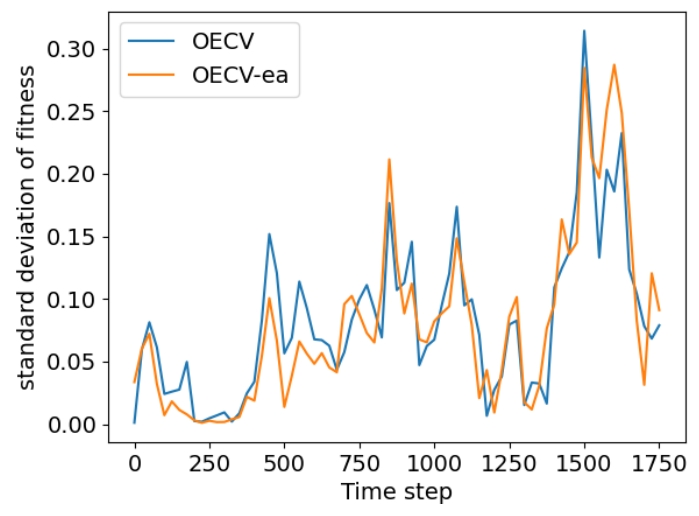

Existing online class imbalance learning methods fail to achieve optimal performance because
their assumptions about enhancing minority classes are hardcoded in model parameters. To
learn the model for the performance measure directly instead of using heuristics, we introduce
a novel framework based on a dynamic evolutionary algorithm called Online Evolutionary
Cost Vector (OECV).
By bringing the threshold moving method from the cost-sensitive learning paradigm and viewing the cost vector as a hyperparameter, our method transforms the online class imbalance issue into a bi-level optimization problem. The first layer utilizes a base online classifier for rough prediction, and the second layer refines the prediction using a threshold moving cost vector learned via a dynamic evolutionary algorithm (EA). OECV benefits from both the efficiency of online learning methods and the high performance of EA, as demonstrated in empirical studies against four state-of-the-art methods on 30 datasets. Additionally, we show the effectiveness of the EA component in the ablation study by comparing OECV to its two variants, OECV-n and OECV-ea, respectively. This work reveals the superiority of incorporating EA into online imbalance classification tasks, while its potential extends beyond the scope of the class imbalance setting and warrants future research attention. We release our code1 for future research.
By bringing the threshold moving method from the cost-sensitive learning paradigm and viewing the cost vector as a hyperparameter, our method transforms the online class imbalance issue into a bi-level optimization problem. The first layer utilizes a base online classifier for rough prediction, and the second layer refines the prediction using a threshold moving cost vector learned via a dynamic evolutionary algorithm (EA). OECV benefits from both the efficiency of online learning methods and the high performance of EA, as demonstrated in empirical studies against four state-of-the-art methods on 30 datasets. Additionally, we show the effectiveness of the EA component in the ablation study by comparing OECV to its two variants, OECV-n and OECV-ea, respectively. This work reveals the superiority of incorporating EA into online imbalance classification tasks, while its potential extends beyond the scope of the class imbalance setting and warrants future research attention. We release our code1 for future research.